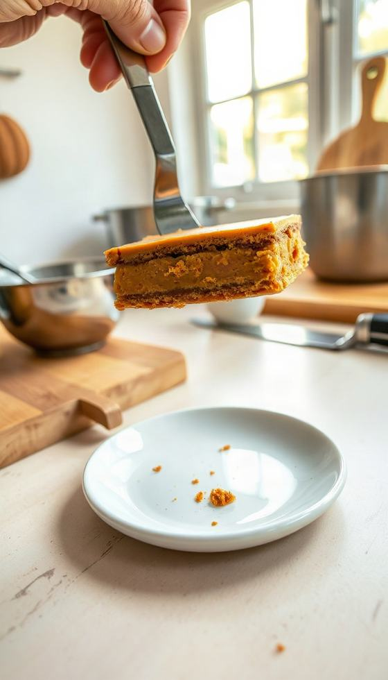
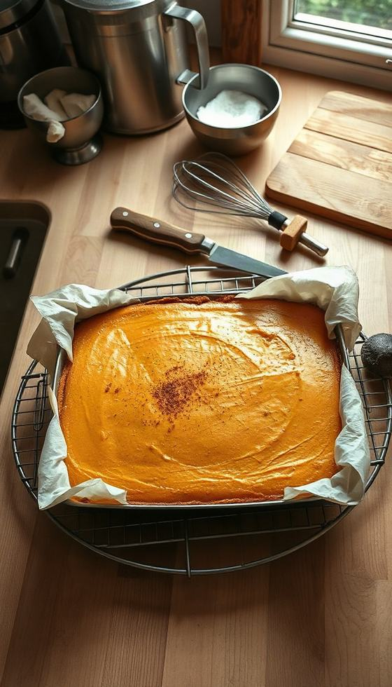
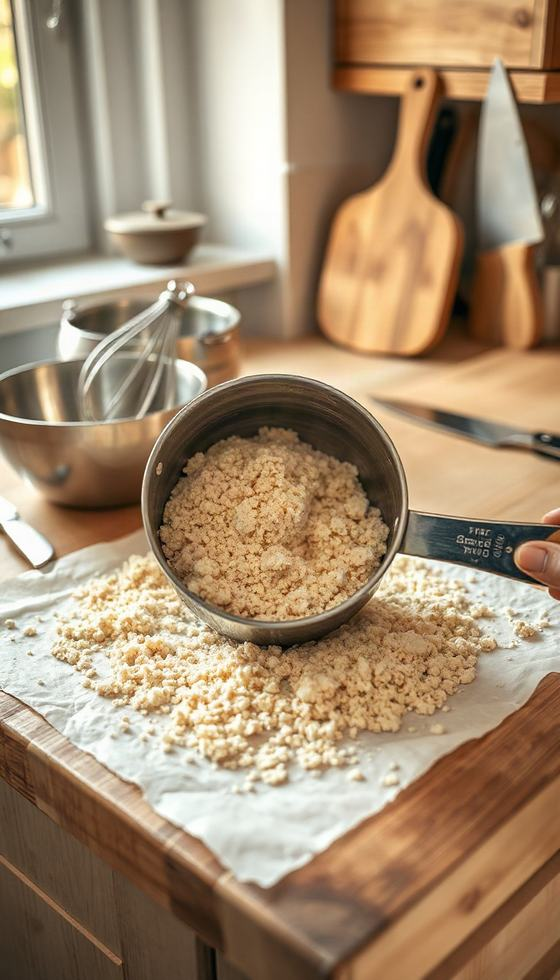
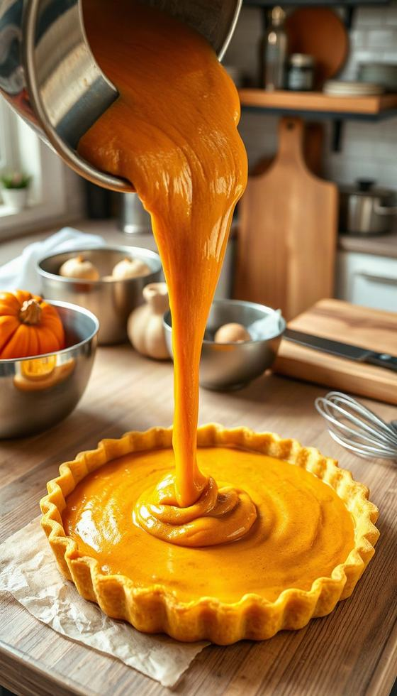
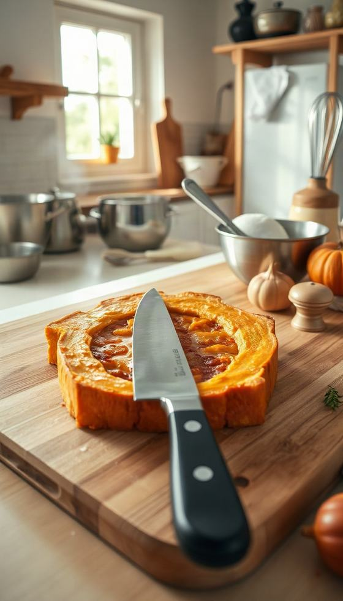

Pantry Challenge
No-Mixer Pumpkin Pie Bars
About $4.72* · 9 servings · 60 min
*Prices are estimates and may differ from what you pay. How we price recipes
A $15 bakery pumpkin pie or $4.72 at home? These No-Mixer Pumpkin Pie Bars come out to $0.52 a bar.





Ingredients
- 1 cup (125 g) all-purpose flour
- 3 tbsp (38 g) white sugar, for the crust
- 1/4 tsp salt, divided
- 6 tbsp (85 g) butter, melted
- 1 cup (240 g) pure canned pumpkin purée (not pie filling), from a 398 mL can
- 2 large eggs
- 1/2 cup (100 g) white sugar, for the filling
- 1/2 cup (125 mL) milk
- 2 tsp ground cinnamon
- 1/2 tsp ground ginger
- 1/4 tsp ground nutmeg
Steps
- Heat the oven to 375°F (190°C). Line an 8x8-inch metal pan with parchment, leaving the ends hanging over the sides as handles.
- Crust: in a bowl, stir the flour, 3 tbsp sugar and a pinch of salt with a fork. Pour in the melted butter and stir until it looks like damp sand. Press it firmly and evenly into the pan with the bottom of a measuring cup. Bake 10 minutes, until the edges are pale gold.
- While the crust bakes, make the filling in the same bowl (no need to wash it). Whisk the pumpkin, eggs, 1/2 cup sugar, milk, cinnamon, ginger, nutmeg and the remaining salt by hand for about 1 minute, until smooth.
- Lower the oven to 350°F (175°C). Pour the filling over the hot crust and smooth it out. Bake 18-22 minutes, until the edges are set and the center still wobbles slightly when you nudge the pan, like set jelly. The center should read 175°F (80°C) if you have a thermometer.
- Cool the bars on a rack for 10 minutes. Then move the metal pan to the freezer for 10 minutes to firm up. Don't put a glass dish straight into the freezer.
- Lift the bars out by the parchment and cut into 9 squares, wiping the knife between cuts. Refrigerate leftovers, covered, for up to 3 days.
What you'll need
Gear links go to Amazon (Amazon.ca, or Amazon.com in the US). As an Amazon Associate I earn from qualifying purchases, at no extra cost to you.
Watch the videoMore $5 recipes
About the prices: they're estimates, not quotes. Since Nov 2026 they're based on Statistics Canada's monthly average retail prices where an item is listed (Open Government Licence - Canada), otherwise on typical Canadian grocery prices, and count only the amount of each ingredient used, not whole packages. What you pay will vary by store, location, brand, sales, taxes and date, and any pantry staples you need to buy will add to it. Recipe visuals and narration are AI-generated.